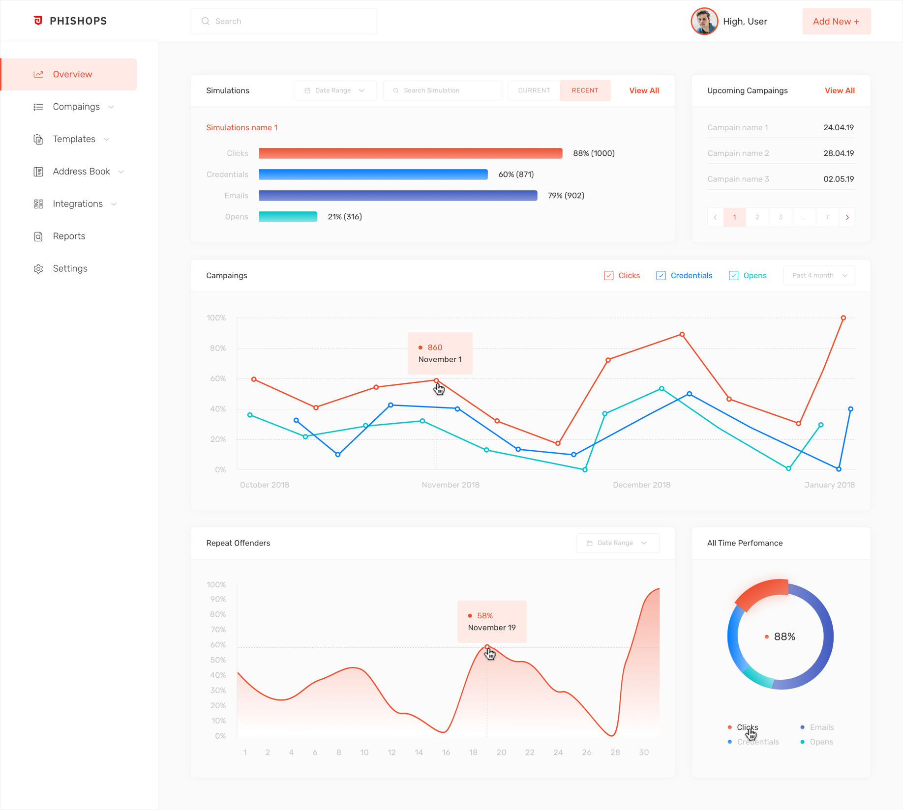
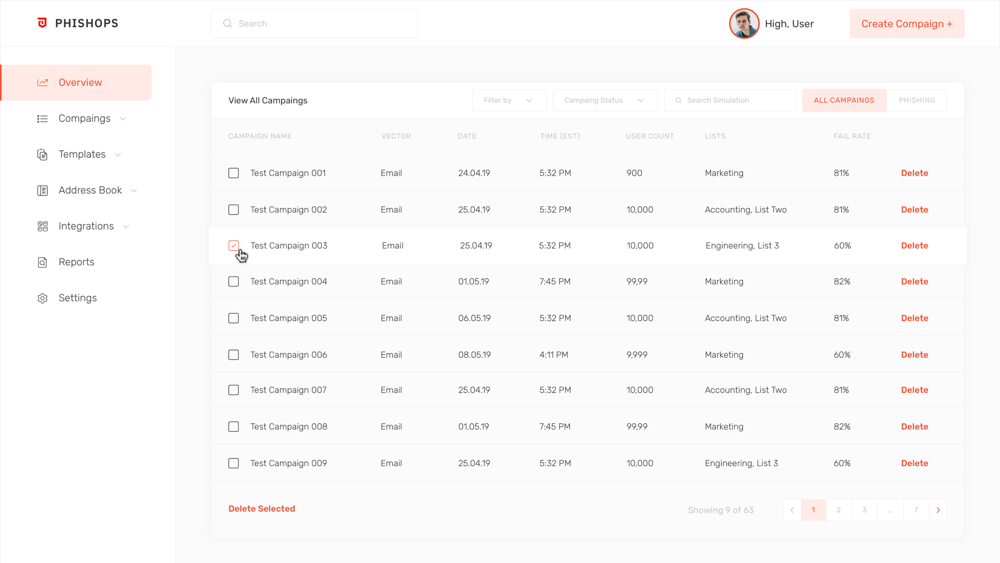

<div class="project">
  <div class="wrapper container">
    <div class="flex-end vertical-padding-container">
      <button class="project__exit">close</button>
    </div>

    <div class="project-info">
      <div class="flex">
        <p class="project-info__title">Topperoo</p>
        <p class="project-info__subtitle">Website design & development support</p>
      </div>
      <p class="project-info__description">
        Topperro is a company that engaged in printing photos on icing sheets. Client had an outdated interface which
        inconvenient to use. The main task was to prepare new visual design and also improve user experience.
      </p>
    </div>

    <div class="project-screenbox flex-center">
      
    </div>

    <div class="project-screenbox flex-center">
      
    </div>

    <footer class="project-footer flex">
      <div class="project-footer-block">
        <p class="project-footer-block__title">Want to know more about this project?</p>
        <a routerLink="/contacts" class="project-footer-block__link">Get in touch</a>
      </div>
      <div class="project-footer-block">
        <p class="project-footer-block__title">Next project:</p>
        <a routerLink="/contacts" class="project-footer-block__link project-footer-block__link_clientsite">Ars Data</a>
      </div>
    </footer>
  </div>
</div>